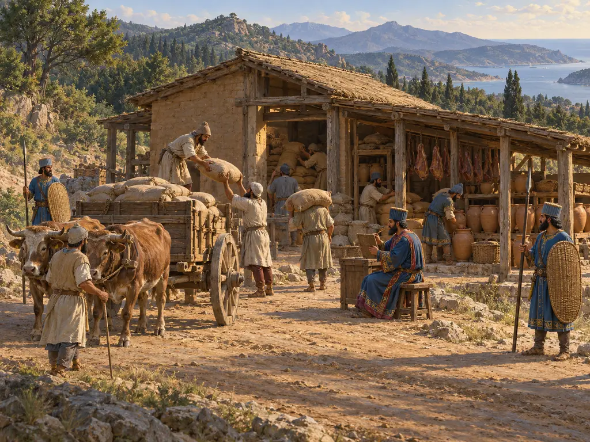
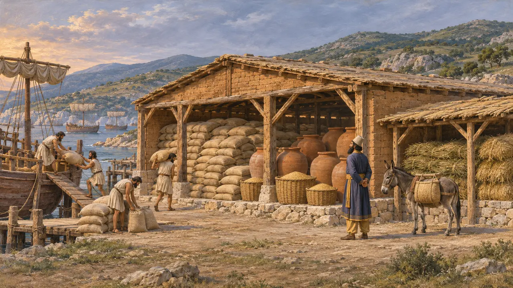
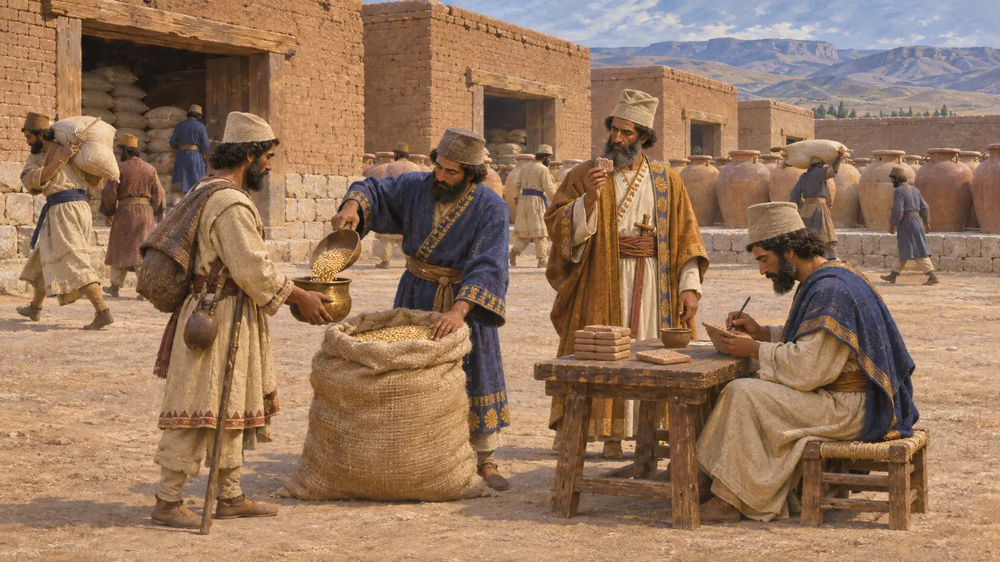
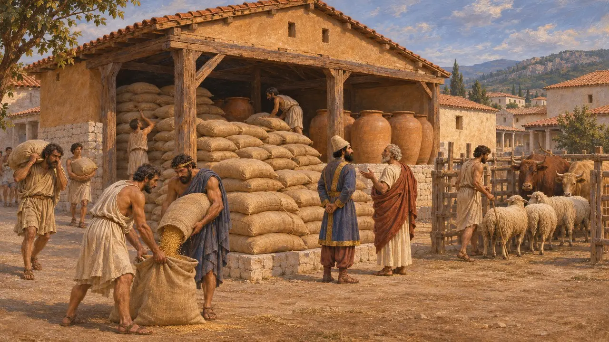
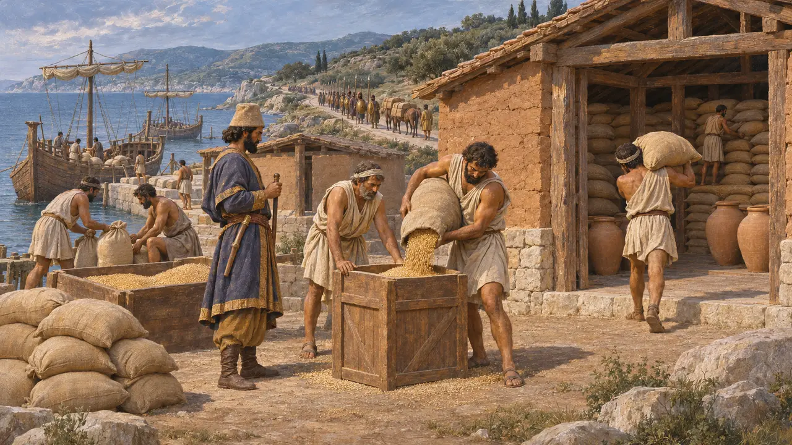

公元前480年薛西斯入侵希腊之前，他的官员在色雷斯沿岸和马其顿选定地点为大军囤积粮草。希罗多德列出了这些地点的名字。这些补给站使一支极为庞大的军队得以穿越贫瘠之地而不致饥馑，也表明了波斯官僚机构能够提前多远进行筹划。
游戏中： 游戏中的补给站由运货车从粮仓运来大麦补充，每车4份，其储备只供军队食用。希罗多德（7.25）记载，粮食是从亚细亚各地经海路运来的，因此车运补给是一种简化。

色雷斯道路沿线的储备
古代记述希罗多德记载，在开凿阿托斯运河的同时，薛西斯命人筹集给养，使大军及其驮畜在行军途中不致挨饿。补给地点经过查访后选定，粮食由商船和运输船从亚洲各地运来。最大的储备位于色雷斯的琉刻阿克特，其余则设在佩林托斯附近的提洛狄扎、多里斯科斯、斯特律蒙河畔的埃昂以及马其顿。
Herodotus 7.25

补给站背后的口粮制度
见于史载波斯波利斯城防泥板约写于公元前509年至前493年，逐日记录了发放给劳工、官员以及持有加印授权文书的旅人的大麦、面粉、葡萄酒和啤酒。泥板展现了大规模运作的仓库、供应者与会计。泥板对希腊战事只字未提，却显示出一套足以为色雷斯的补给站备足物资的行政体系。
R. T. Hallock, Persepolis Fortification Tablets, 1969

供养国王的城市
古代记述希罗多德称，沿途城镇还须供养大军，并为国王备办一顿宴席，为此提前数月便囤积谷物与牲畜。他记载，萨索斯的安提帕特洛斯代表萨索斯人在大陆上的城镇，花费400塔兰特白银供养大军。他还转述了阿布德拉的麦加克瑞翁的一句玩笑：他叫本城百姓感谢诸神，幸好薛西斯一天只吃一顿饭。
Herodotus 7.118-120

需要多少食物
争夺中希罗多德估计全军连同仆从和船员超过500万人，并推算若每人每日食用1科尼克斯小麦，则每日耗粮逾110,000美狄姆诺斯。史家认为这些数字严重夸大而不予采信。依靠补给站和船只供给的限度，正是主张兵力远小于此的主要论据。许多现代估算认为陆军或在100,000至200,000人之间，另加舰队船员，但学界并无定论。
Herodotus 7.186-187; P. Briant, From Cyrus to Alexander, 2002
来源
- Herodotus 7.25
- Herodotus 7.118-120
- Herodotus 7.186-187
- R. T. Hallock, Persepolis Fortification Tablets, 1969
- P. Briant, From Cyrus to Alexander, 2002